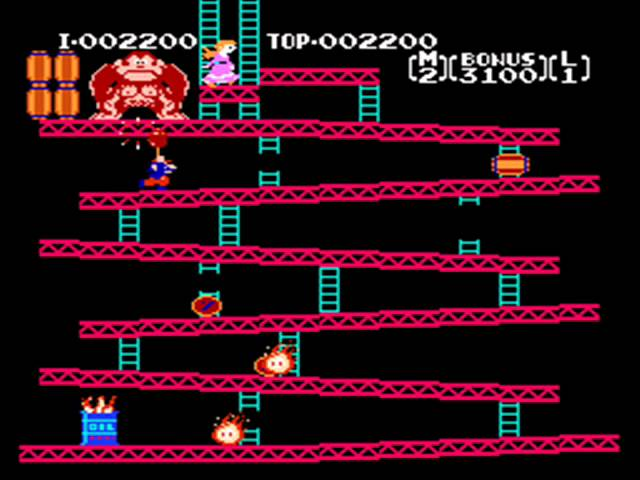

Mario é uma franquia da nintendo de extrema importância para toda a indústria de jogos. Sua primeira aparição foi no jogo "Donkey Kong", de 1981, mas virou o protagonista de um jogo em 1985, no título Super Mario Bros.



Bem-vindo ao universo de Mario, o corajoso herói de bigode e boné vermelho que conquistou gerações! O que começou como uma simples imagem pixelada de 16x16 em um fliperama evoluiu para uma das franquias de jogos mais revolucionárias e adoradas de todos os tempos!
Super Mario é um nome conhecido mundialmente atualmente. Mas sua história completa não é conhecida por muitos. Sua história Começa lá em 1981, no jogo para Fliperamas Donkey Kong. Nesse jogo o Mario nem Mario era ainda, o seu nome era "Jumpman" (Do inglês, "Homem que pula"). Ao contrário dos jogos atuais da franquia, Jumpman precisava desviar e pular sobre os barris lançados por Donkey Kong para chegar ao topo da estrutura e resgatar a princesa.
Em 1983, uma crise bateu nos Estados Unidos. O "Crash dos Videogames de 1983" atingiu os EUA e fez com que a indústria de jogos quase desaparecesse. Caindo de 3,2 Bilhões para 100 milhões em apenas 3 anos. Porém, em 1985, a Nintendo lançou Super Mario Bros., jogo que ajudou a recuperar a confiança do público nos videogames e impulsionou novamente o mercado.
Além de seu enorme sucesso comercial, Super Mario Bros. introduziu diversas ideias que se tornaram padrão na indústria. Entre elas estava a rolagem lateral da tela (side-scrolling), que permitia ao jogador explorar fases muito maiores sem que tudo precisasse caber em uma única tela. O jogo também apresentava controles precisos, fases criativas e um design que incentivava a exploração e a descoberta de segredos, servindo de inspiração para inúmeros jogos lançados nos anos seguintes.
A franquia continuou revolucionando os videogames ao longo dos anos. Em 1996, Super Mario 64 mostrou ao mundo como um jogo de plataforma em três dimensões poderia funcionar, estabelecendo conceitos como o controle livre da câmera e a movimentação em ambientes totalmente 3D. Muitas das mecânicas apresentadas nesse jogo serviram de base para diversos títulos modernos.
Mais de quarenta anos após sua primeira aparição, Mario continua sendo um dos personagens mais importantes da história dos videogames. Jogos, que chegaram a vender centenas de milhões de cópias, influenciaram desenvolvedores do mundo inteiro e ajudaram a transformar os videogames em uma das maiores formas de entretenimento da atualidade
Site produzido pelos alunos Lucsa Pereira, Lucas Viana, Lyon Lucas e Mariana França.
Alunos do curso de Redes de Computadores 1ºano A do CEFET-MG
Absolutamente TODOS os direitos reservados.